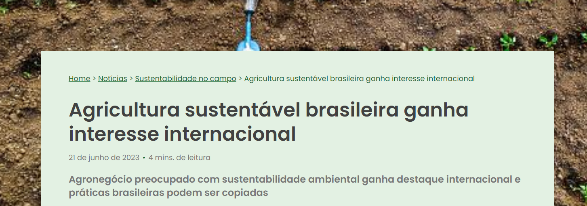
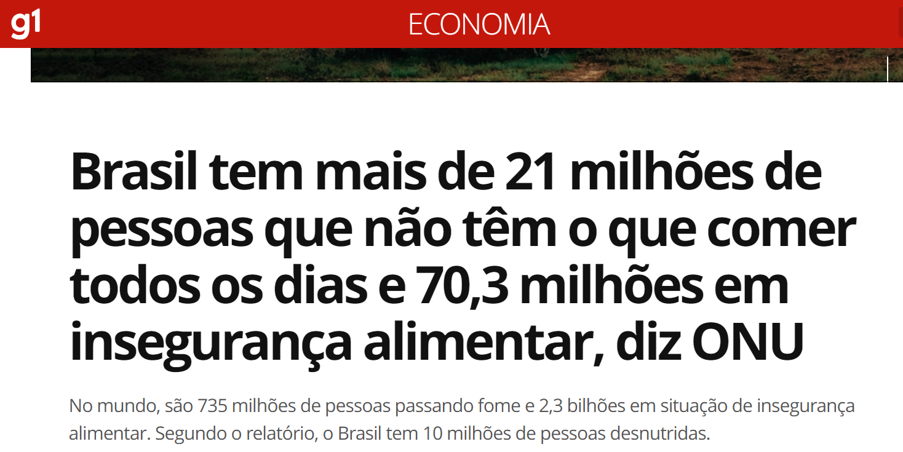
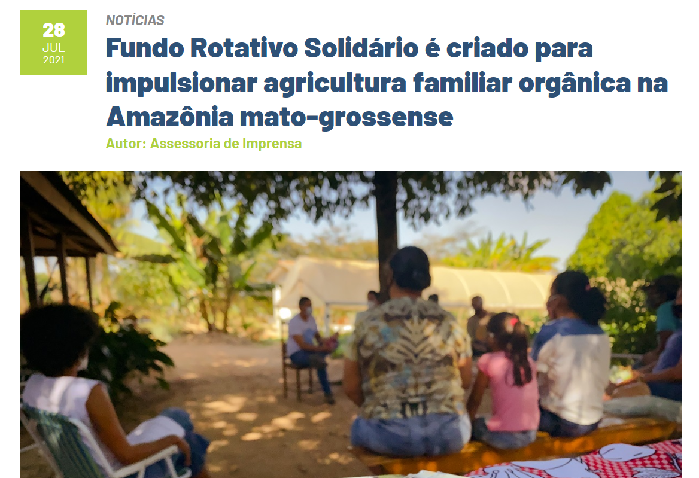
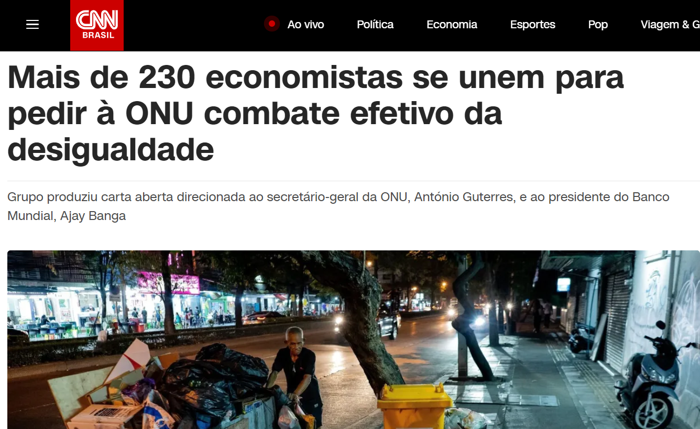
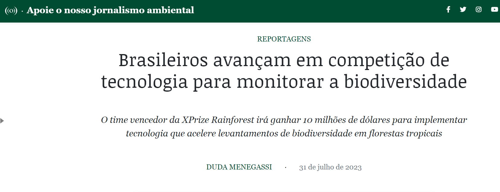
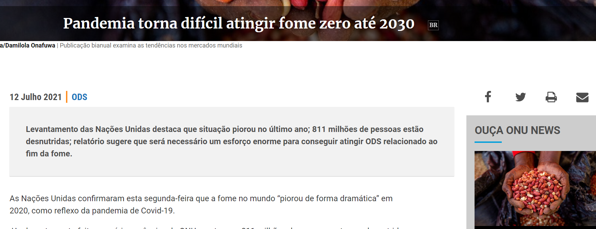

Agricultura sustentável brasileira ganha interesse internacional 21 de junho de 2023 há 4 mins.... 
Brasil tem mais de 21 milhões de pessoas que não têm o que comer todos os dias e 70,3 milhões em....
Fundo Rotativo Solidário é criado para impulsionar agricultura....
Mais de 230 economistas se unem para pedir à ONU combate efetivo da desigualdade...
Brasileiros avançam em competição de tecnologia para monitorar a biodiversidade....
Levantamento das Nações Unidas destaca que situação piorou no último ano;....